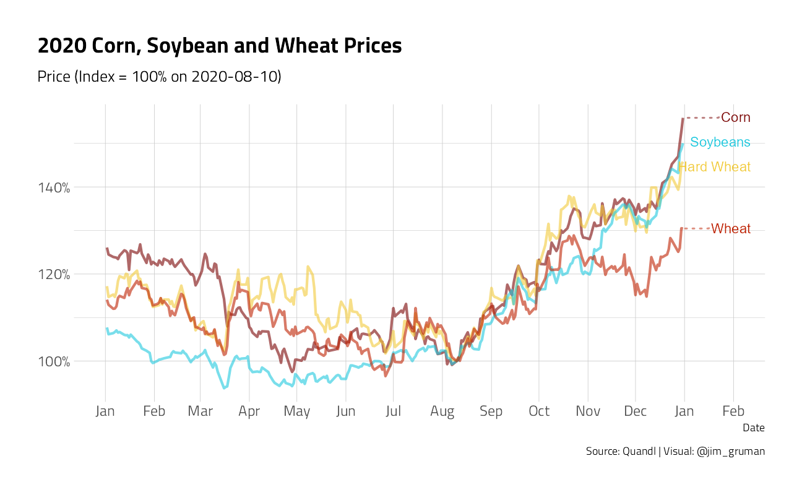
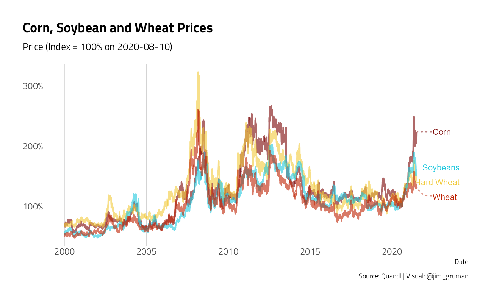
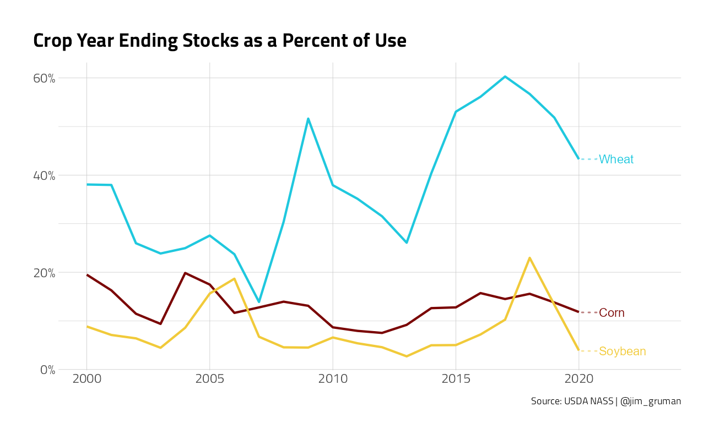

Last updated: 2021-09-09
Checks: 7 0
Knit directory: myTidyTuesday/
This reproducible R Markdown analysis was created with workflowr (version 1.6.2). The Checks tab describes the reproducibility checks that were applied when the results were created. The Past versions tab lists the development history.
Great! Since the R Markdown file has been committed to the Git repository, you know the exact version of the code that produced these results.
Great job! The global environment was empty. Objects defined in the global environment can affect the analysis in your R Markdown file in unknown ways. For reproduciblity it’s best to always run the code in an empty environment.
The command set.seed(20210907) was run prior to running the code in the R Markdown file. Setting a seed ensures that any results that rely on randomness, e.g. subsampling or permutations, are reproducible.
Great job! Recording the operating system, R version, and package versions is critical for reproducibility.
Nice! There were no cached chunks for this analysis, so you can be confident that you successfully produced the results during this run.
Great job! Using relative paths to the files within your workflowr project makes it easier to run your code on other machines.
Great! You are using Git for version control. Tracking code development and connecting the code version to the results is critical for reproducibility.
The results in this page were generated with repository version 1c02447. See the Past versions tab to see a history of the changes made to the R Markdown and HTML files.
Note that you need to be careful to ensure that all relevant files for the analysis have been committed to Git prior to generating the results (you can use wflow_publish or wflow_git_commit). workflowr only checks the R Markdown file, but you know if there are other scripts or data files that it depends on. Below is the status of the Git repository when the results were generated:
Ignored files:
Ignored: .Rhistory
Ignored: .Rproj.user/
Ignored: catboost_info/
Ignored: data/2021-09-08/
Ignored: data/acs_poverty.rds
Ignored: data/grainstocks.rds
Ignored: data/hike_data.rds
Ignored: data/us_states.rds
Ignored: data/weatherstats_toronto_daily.csv
Note that any generated files, e.g. HTML, png, CSS, etc., are not included in this status report because it is ok for generated content to have uncommitted changes.
These are the previous versions of the repository in which changes were made to the R Markdown (analysis/NASSStocksToUse.Rmd) and HTML (docs/NASSStocksToUse.html) files. If you’ve configured a remote Git repository (see ?wflow_git_remote), click on the hyperlinks in the table below to view the files as they were in that past version.
| File | Version | Author | Date | Message |
|---|---|---|---|---|
| Rmd | 1c02447 | opus1993 | 2021-09-09 | label lines directly without a legend |
| html | 210ff1d | opus1993 | 2021-09-09 | Build site. |
| Rmd | 050b3d1 | opus1993 | 2021-09-09 | update for current theming standards |
Professor Aaron Smith, Ag Economist at UC Davis, writes in Good Times Down on the Farm, that corn, soybean and wheat prices have increased by 50% since mid-August of 2020. On top of record government support payments to US farmers in 2020, these price increases are a huge potential boon for farmers as they plan next year’s crops.
But what caused the price increase?
suppressPackageStartupMessages({
library(tidyverse)
library(lubridate)
library(here)
library(rnassqs)
library(ggrepel)
library(Quandl)
})
extrafont::loadfonts(quiet = TRUE)
source(here::here("code","_common.R"),
verbose = FALSE,
local = knitr::knit_global())Registered S3 method overwritten by 'tune':
method from
required_pkgs.model_spec parsnipggplot2::theme_set(theme_jim(base_size = 12))nassqs_auth(Sys.getenv("NASSQS_TOKEN")) # authentificate your api key
# nassqs_params() # check what variables are there
# comm_list <- nassqs_param_values("commodity_desc") # get commodity list
# set years
years <- 2000:2020
# set parameters for API calls except for years
# (we are not allowed to request many records at once, so I iterate API calls by years)
params <- list(
source_desc = "SURVEY",
short_desc = c(
"CORN, GRAIN - STOCKS, MEASURED IN BU",
"WHEAT - STOCKS, MEASURED IN BU",
"SOYBEANS - STOCKS, MEASURED IN BU",
"CORN, GRAIN - PRODUCTION, MEASURED IN BU",
"WHEAT - PRODUCTION, MEASURED IN BU",
"SOYBEANS - PRODUCTION, MEASURED IN BU"
),
agg_level_desc = "NATIONAL"
)
# create data based on the parameters and years using 'nassqs'
if (!file.exists(here("data", "grainstocks.rds"))) {
df <- map_dfr(years, function(x) {
params[["year"]] <- x
nassqs(params)
})
write_rds(df, here("data", "grainstocks.rds"))
} else {
df <- read_rds(here("data", "grainstocks.rds"))
}
# process data for plotting
df1 <- df %>%
select(year, state_alpha, commodity_desc, freq_desc, reference_period_desc, unit_desc, short_desc, Value) %>%
mutate(Value = parse_number(Value)) %>%
filter(!reference_period_desc %in% c("FIRST OF MAR", "FIRST OF DEC")) %>%
filter(!(reference_period_desc %in% c("FIRST OF JUN") & commodity_desc %in% c("CORN", "SOYBEANS"))) %>%
filter(!(reference_period_desc %in% c("FIRST OF SEP") & commodity_desc %in% c("WHEAT"))) %>%
filter(!str_detect(reference_period_desc, "YEAR -")) %>%
mutate(short_desc = case_when(
short_desc == "CORN, GRAIN - PRODUCTION, MEASURED IN BU" ~ "Corn_Prod",
short_desc == "CORN, GRAIN - STOCKS, MEASURED IN BU" ~ "Corn_Stocks",
short_desc == "SOYBEANS - PRODUCTION, MEASURED IN BU" ~ "Soybean_Prod",
short_desc == "SOYBEANS - STOCKS, MEASURED IN BU" ~ "Soybean_Stocks",
short_desc == "WHEAT - PRODUCTION, MEASURED IN BU" ~ "Wheat_Prod",
short_desc == "WHEAT - STOCKS, MEASURED IN BU" ~ "Wheat_Stocks",
TRUE ~ short_desc
)) %>%
select(year, short_desc, Value) %>%
pivot_wider(
values_from = Value,
names_from = short_desc
) %>%
add_row(
year = max(df$year) + 1,
Corn_Stocks = 1702000000,
Soybean_Stocks = 175000000,
Wheat_Stocks = 862000000
) %>%
mutate(Corn = lead(Corn_Stocks, 1) / (Corn_Prod + Corn_Stocks - lead(Corn_Stocks, 1))) %>%
mutate(Soybean = lead(Soybean_Stocks, 1) / (Soybean_Prod + Soybean_Stocks - lead(Soybean_Stocks, 1))) %>%
mutate(Wheat = lead(Wheat_Stocks, 1) / (Wheat_Prod + Wheat_Stocks - lead(Wheat_Stocks, 1))) %>%
filter(year != max(df$year) + 1)
pstocks <- df1 %>%
select(year, Corn, Soybean, Wheat) %>%
pivot_longer(-year) %>%
mutate(name_lab = if_else(year == max(year), name, NA_character_)) %>%
ggplot(aes(x = year, y = value, color = name, label = name_lab)) +
geom_line(size = 1, show.legend = FALSE) +
scale_y_continuous(labels = scales::percent_format(accuracy = 1)) +
scale_x_continuous(
limits = c(2000, 2023),
breaks = seq(2000, 2020, by = 5),
minor_breaks = NULL
) +
geom_text_repel(
direction = "y",
xlim = c(2020.8, NA),
hjust = 0,
segment.size = .7,
segment.alpha = .5,
segment.linetype = "dotted",
box.padding = .4,
segment.curvature = -0.1,
segment.ncp = 3,
segment.angle = 20,
show.legend = FALSE
) +
labs(
x = NULL,
y = NULL,
color = NULL,
title = "Crop Year Ending Stocks as a Percent of Use",
caption = "Source: USDA NASS | @jim_gruman"
)Quandl.api_key(Sys.getenv("quandl"))
crops <- c("Corn", "Soybeans", "SRW", "HRW")
update_since <- as.Date("2000-01-01") # change this one
futuresID <- c("C", "S", "W", "KW")
min_date <- as.Date("2020-08-10")
start_date <- as.Date("2000-01-01")
df2 <- map_dfc(list(futuresID), ~ Quandl::Quandl(paste0("CHRIS/CME_", ., "1"),
start_date = as.character(start_date)
)) %>%
select(Date, ends_with("Settle")) %>%
mutate(Date = ymd(Date))
names(df2) <- c("Date", crops)
pprices2000 <- df2 %>%
transmute(
Date = Date,
Corn = Corn / max(ifelse(Date == min_date, Corn, 0)),
Soybeans = Soybeans / max(ifelse(Date == min_date, Soybeans, 0)),
Wheat = SRW / max(ifelse(Date == min_date, SRW, 0)),
`Hard Wheat` = HRW / max(ifelse(Date == min_date, HRW, 0))
) %>%
pivot_longer(-Date) %>%
filter(Date > start_date) %>%
ggplot(aes(x = Date, y = value, color = name), show.legend = FALSE) +
geom_line(size = 1, alpha = 0.6, show.legend = FALSE) +
scale_y_continuous(labels = scales::percent_format(accuracy = 1)) +
scale_x_date(
limits = c(ymd(start_date), max(df2$Date) %m+% months(12)),
breaks = seq.Date(ymd(start_date), ymd("2020-01-01"), by = "5 years"),
minor_breaks = NULL,
date_labels = "%Y"
) +
geom_text_repel(
data = . %>% filter(Date == max(df2$Date)),
aes(label = name),
direction = "y",
xlim = c(max(df2$Date) %m+% months(9), NA),
hjust = 0,
segment.size = .7,
segment.alpha = .5,
segment.linetype = "dotted",
box.padding = .4,
segment.curvature = -0.1,
segment.ncp = 3,
segment.angle = 20,
show.legend = FALSE
) +
labs(
x = "Date", y = NULL, color = NULL,
subtitle = paste0("Price ", "(Index = 100% on ", min_date, ")"), color = "Commodity",
title = "Corn, Soybean and Wheat Prices",
caption = "Source: Quandl | Visual: @jim_gruman"
) +
theme(
legend.position = c(0.9, 0.7),
legend.background = element_rect(color = "white")
)
pprices2020 <- df2 %>%
transmute(
Date = Date,
Corn = Corn / max(ifelse(Date == min_date, Corn, 0)),
Soybeans = Soybeans / max(ifelse(Date == min_date, Soybeans, 0)),
Wheat = SRW / max(ifelse(Date == min_date, SRW, 0)),
`Hard Wheat` = HRW / max(ifelse(Date == min_date, HRW, 0))
) %>%
pivot_longer(-Date) %>%
filter(between(Date, ymd("2020-01-01"), ymd("2020-12-31"))) %>%
ggplot(aes(x = Date, y = value, color = name), show.legend = FALSE) +
geom_line(size = 1, alpha = 0.6, show.legend = FALSE) +
scale_y_continuous(labels = scales::percent_format(accuracy = 1)) +
scale_x_date(
limits = c(ymd("2020-01-01"), ymd("2021-02-01")),
breaks = seq.Date(ymd("2020-01-01"),
ymd("2021-01-01"),
by = "month"
),
minor_breaks = NULL,
date_labels = "%b"
) +
geom_text_repel(
data = . %>% filter(Date == ymd("2021-01-01")),
aes(label = name),
direction = "y",
xlim = c(ymd("2021-01-01") %m+% months(1), NA),
hjust = 0,
segment.size = .7,
segment.alpha = .5,
segment.linetype = "dotted",
box.padding = .4,
segment.curvature = -0.1,
segment.ncp = 3,
segment.angle = 20,
show.legend = FALSE
) +
labs(
x = "Date", y = NULL,
subtitle = paste0("Price ", "(Index = 100% on ", min_date, ")"), color = NULL,
title = "2020 Corn, Soybean and Wheat Prices",
caption = "Source: Quandl | Visual: @jim_gruman"
) +
theme(
legend.position = c(0.95, 0.2),
legend.background = element_rect(color = "white")
)pprices2020
First, some perspective. Prices were much higher in 2011-13 than in the last 5 years. Corn averaged $6.50 per bushel in 2011-13 and just $3.70 in 2015-19, soybeans averaged $14 in 2011-13 and $9.50 in 2015-19, and wheat averaged $7.70 in 2011-13 and $4.60 in 2015-19.
pprices2000
Smith goes on to say that commodity prices rise because some quantity has been, or is expected to be, removed from the market. It may be removed by bad weather that reduces production or a new buyer who increases purchases. His rule of thumb for US major grains is that the percentage price change is similar to, or a little larger than, the quantity removed as a percent of production.
In this paper that Aaron Smith published in 2012 with Mike Adjemian, they estimated how much corn and soybean futures change when the USDA changes its production estimates. They found that a 1% decline in expected corn production raises prices by 1.35% on average, and that a 1% decline in expected soybean production raises prices by 1% on average. The price response is larger when the markets are tight such as when inventories are low or during the ethanol boom and when the quantity decline is expected to be repeated for multiple years.
For example, the 2012 drought in the US midwest reduced corn production by about 27% and increased prices by about 39%. In May of that year, USDA projected a 14.8b bushel harvest, but actual US production was 10.8b, a loss of 27%. During the growing season, as markets became aware of the poor weather, the December futures price rose from $5.39 on May 1 to $7.49 on December 3, an increase of 39%. So, the 39% price increase came from a 27% quantity loss.
To explain 2020’s 50% increase in prices, we are looking for 50/1.35 = 37% of corn production being removed from the market, or about 5.5b bushels. We’re also looking for about 2b bushels of soybeans (50% of production) and about 0.9b bushels of wheat (50% of production).
These are huge numbers.
One possibility is the recent surge in US exports to China. We’re only a third of the way through the crop year, but we’re not going to get anywhere close to 5.5b of corn exported to China.
China has also resumed buying US soybeans in a big way. The purchases started in August, right around when prices started increasing, but are the purchases large enough to explain the 50% price increases? To explain a 50% soybean price increase, we need about 55mmt (i.e., 2b bushels) to be removed from the market this crop year. Suppose the market was expecting 2020/21 exports to China to track the 2019/20 levels. We’re 17mmt ahead of that pace through the first third of the year. If we keep it up, we’d be 51mmt ahead of pace by the end of the crop year for a total of 65mmt of soybean exports to China.
Is that feasible? Professor Smith has doubts
The required quantity change to cause a 50% price increase would be smaller if inventories (stocks) were low. Put differently, the commodity is less price elastic when stocks are low. Projected corn stocks at the end of the 2020 crop year are about average (11.5%), wheat stocks are high (43%), and soybean stocks are at their lowest in at least 20 years (3.9%). Thus, China’s buying binge may have driven prices up by more than it normally would because of the current low stocks.
pstocks
Another explanation for the price increases could be expected production losses in the Southern Hemisphere in their upcoming season.
In summary, China’s return to buying US soybeans is the proximate cause of the late 2020 price boom in soybeans. Corn and wheat prices have increased because the market expects farmers to plant more soybeans, and therefore less corn and wheat, next year.
Expect midwestern farmers to be locking in these high prices selling forward for next year’s crop, and by extension, it may be a good time to be in the tractor sales business.
Read Aaron Smith’s article here and check out the UC Davis Export Sales Reports data app.
sessionInfo()R version 4.1.1 (2021-08-10)
Platform: x86_64-w64-mingw32/x64 (64-bit)
Running under: Windows 10 x64 (build 19043)
Matrix products: default
locale:
[1] LC_COLLATE=English_United States.1252
[2] LC_CTYPE=English_United States.1252
[3] LC_MONETARY=English_United States.1252
[4] LC_NUMERIC=C
[5] LC_TIME=English_United States.1252
attached base packages:
[1] stats graphics grDevices utils datasets methods base
other attached packages:
[1] Quandl_2.11.0 xts_0.12.1 zoo_1.8-9 ggrepel_0.9.1
[5] rnassqs_0.5.0 here_1.0.1 lubridate_1.7.10 forcats_0.5.1
[9] stringr_1.4.0 dplyr_1.0.7 purrr_0.3.4 readr_2.0.1
[13] tidyr_1.1.3 tibble_3.1.4 ggplot2_3.3.5 tidyverse_1.3.1
[17] workflowr_1.6.2
loaded via a namespace (and not attached):
[1] readxl_1.3.1 backports_1.2.1 systemfonts_1.0.2
[4] workflows_0.2.3 plyr_1.8.6 splines_4.1.1
[7] listenv_0.8.0 digest_0.6.27 foreach_1.5.1
[10] htmltools_0.5.2 yardstick_0.0.8 viridis_0.6.1
[13] parsnip_0.1.7.900 fansi_0.5.0 magrittr_2.0.1
[16] tune_0.1.6 tzdb_0.1.2 recipes_0.1.16
[19] globals_0.14.0 modelr_0.1.8 gower_0.2.2
[22] extrafont_0.17 R.utils_2.10.1 extrafontdb_1.0
[25] hardhat_0.1.6 rsample_0.1.0 dials_0.0.9.9000
[28] colorspace_2.0-2 rvest_1.0.1 textshaping_0.3.5
[31] haven_2.4.3 xfun_0.25 crayon_1.4.1
[34] jsonlite_1.7.2 survival_3.2-11 iterators_1.0.13
[37] glue_1.4.2 gtable_0.3.0 ipred_0.9-11
[40] R.cache_0.15.0 Rttf2pt1_1.3.9 future.apply_1.8.1
[43] scales_1.1.1 infer_1.0.0 DBI_1.1.1
[46] Rcpp_1.0.7 viridisLite_0.4.0 GPfit_1.0-8
[49] lava_1.6.10 prodlim_2019.11.13 httr_1.4.2
[52] ellipsis_0.3.2 farver_2.1.0 pkgconfig_2.0.3
[55] R.methodsS3_1.8.1 nnet_7.3-16 sass_0.4.0
[58] dbplyr_2.1.1 utf8_1.2.2 labeling_0.4.2
[61] tidyselect_1.1.1 rlang_0.4.11 DiceDesign_1.9
[64] later_1.3.0 munsell_0.5.0 cellranger_1.1.0
[67] tools_4.1.1 cachem_1.0.6 cli_3.0.1
[70] generics_0.1.0 broom_0.7.9 evaluate_0.14
[73] fastmap_1.1.0 yaml_2.2.1 ragg_1.1.3
[76] rematch2_2.1.2 knitr_1.34 fs_1.5.0
[79] future_1.22.1 whisker_0.4 R.oo_1.24.0
[82] xml2_1.3.2 compiler_4.1.1 rstudioapi_0.13
[85] curl_4.3.2 reprex_2.0.1 lhs_1.1.3
[88] bslib_0.3.0 stringi_1.7.4 highr_0.9
[91] gdtools_0.2.3 hrbrthemes_0.8.0 lattice_0.20-44
[94] Matrix_1.3-4 styler_1.5.1 conflicted_1.0.4
[97] vctrs_0.3.8 tidymodels_0.1.3 pillar_1.6.2
[100] lifecycle_1.0.0 furrr_0.2.3 jquerylib_0.1.4
[103] httpuv_1.6.2 R6_2.5.1 promises_1.2.0.1
[106] gridExtra_2.3 parallelly_1.28.1 codetools_0.2-18
[109] MASS_7.3-54 assertthat_0.2.1 rprojroot_2.0.2
[112] withr_2.4.2 parallel_4.1.1 hms_1.1.0
[115] grid_4.1.1 rpart_4.1-15 timeDate_3043.102
[118] class_7.3-19 rmarkdown_2.10 git2r_0.28.0
[121] pROC_1.18.0